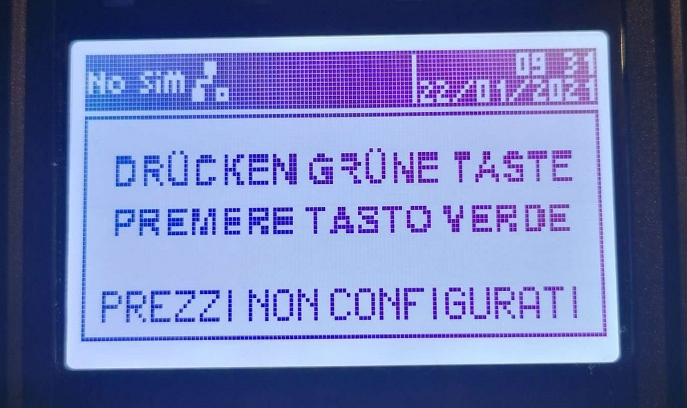
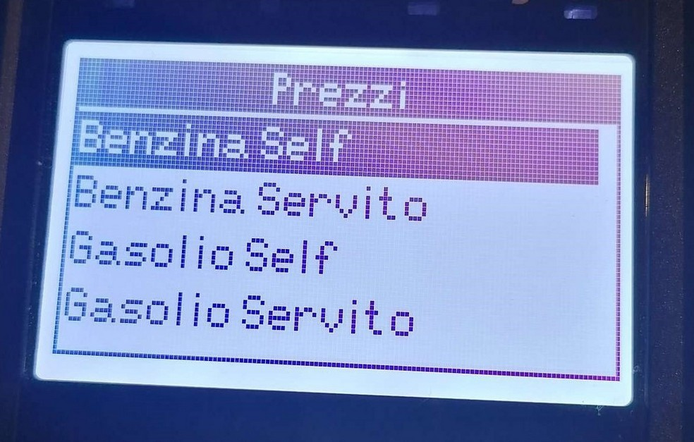
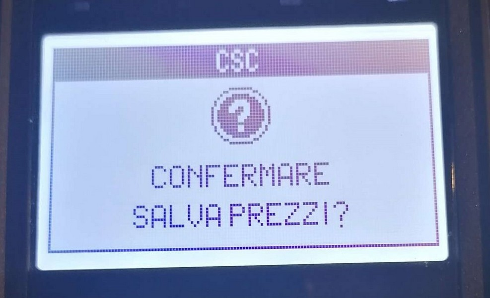
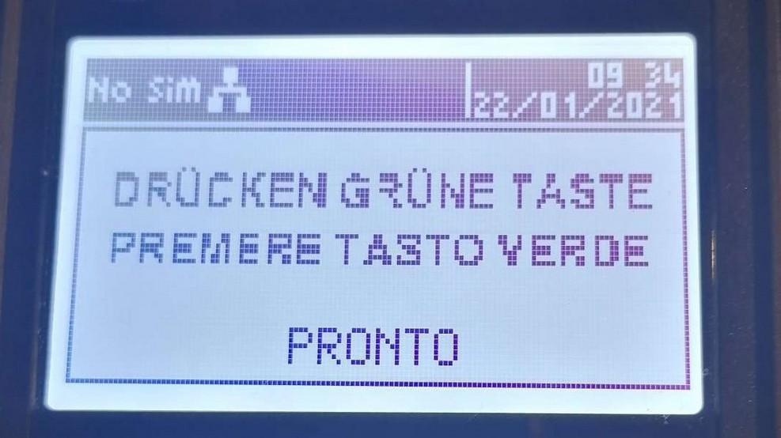
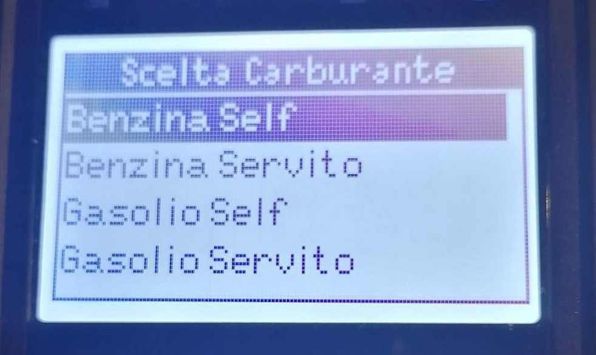
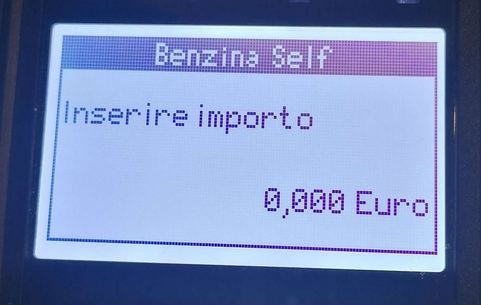

MANUALE DI CONFIGURAZIONE E UTILIZZO
CARTA SCONTO
CARBURANTE
INGENICO TETRA
Stato
Utilizzato da
Redatto da RCC
Approvato da D.
Area Monetica
VERSIONING
DATA
REVISIONE
MODIFICHE APPORTATE
16/12/20
1.0
PRIMA STESURA
21/12/20
'1.1
Aggiunto procedura Pagamento
21/01/21
2.0
Aggiunti screenshot POS e aggiornato funzionalità pagamento
25/01/21
2.1
Aggiunte informazioni per sforamento massimale
08/03/22
2.2
Aggiunte info per aggiornamento tramite telegestione
Indice generale
1. Scopo e campo di applicazione...........................................................................................5
2. Configurazione connessione Ethernet del POS.....................................................................6
2.1. Configurazione........................................................................................................................6
3. Carta Sconto Carburante...................................................................................................8
3.1. Configurazione applicazione CSC..............................................................................................8
3.2. Menù Carta Sconto Carburante.................................................................................................9
3.2.1. Inizializzazione................................................................................................................10
3.2.2. Ristampa........................................................................................................................10
3.2.3. Stampa + Reset Totali.....................................................................................................10
3.2.4. Riallineamento................................................................................................................10
3.2.5. Storno............................................................................................................................10
3.2.6. Prezzi.............................................................................................................................10
3.2.7. About.............................................................................................................................11
3.2.8. Restart POS....................................................................................................................11
3.3. Pagamento CSC.....................................................................................................................11
3.3.1. Configurazione Prezzi Carburante.....................................................................................11
3.3.2. Pagamento.....................................................................................................................13
4.0 Aggiornamento POS tramite telegestione........................................................................15
1. Scopo e campo di applicazione
Questo documento descrive le modalità di configurazione e utilizzo dell’applicazione CARTA
SCONTO CARBURANTE per POS Ingenico Tetra Desk3200.
2. Configurazione connessione Ethernet del POS
2.1.
Configurazione
Per accedere al menù di configurazione della connessione Ethernet:
1. premere sul POS il tasto grigio come mostrato nell’immagine seguente:

- selezionare la voce Telium Manager
- digitare la password 83872
- selezionare la voce Impostazioni Terminale
- selezionare la voce Comunicazione
- selezionare la voce Ethernet
Nel menù Ethernet è possibile impostare i seguenti parametri per la configurazione:
• DHCP: OFF.
Premere tasto verde per salvare.
• IP LOCALE: inserire l’IP che si vuole assegnare al POS nella rete in cui è connesso.
Premere tasto verde per salvare.
• SUBNET MASK: inserire la subnet mask della rete a cui è connesso il POS.
Premere tasto verde per salvare.
• GATEWAY:inserire la ateway della rete a cui è connesso il POS.
Premere tasto verde per salvare.
3. Carta Sconto Carburante
L’applicazione Carta Sconto Carburante (CSC) è disponibile solo per i pos Tetra Desk3200.
3.1.
Configurazione applicazione CSC
Per accedere al menù di configurazione dell’applicazione CSC:
1. premere sul POS il tasto grigio come mostrato nell’immagine seguente:

- selezionare la voce Carta Sconto
- selezionare la voce Inizializzazione
- digitare la password 72619
Nel menù Inizializzazione è possibile impostare i seguenti parametri:
• RUPP: inserire il RUPP
Premere tasto verde per salvare.
• TIPO CONNESSIONE: selezionare Ethernet o GPRS.
Se GPRS: selezionare l’APN oppure digitare l’APN desiderato
Premere tasto verde per salvare.
• PROTOCOLLO DI RETE: selezionare TCP/IP o TCP/IP + SSL
Premere tasto verde per salvare.
• CONN PRINCIPALE: digitare IP e PORTA del server di connessione principale.
Premere tasto verde per salvare.
• CONN BACKUP: digitare IP e PORTA del server di connessione di backup.
Premere tasto verde per salvare.
• TIMEOUT: digitare in secondi il tempo di attesa per la connessione al server.
Premere tasto verde per salvare.
• LINGUA: selezionare IT o DE.
Premere tasto verde per salvare.
• INTESTAZIONE 1: digitare l’header da stampare sullo scontrino.
Premere tasto verde per salvare.
• INTESTAZIONE 2: digitare l’header da stampare sullo scontrino.
Premere tasto verde per salvare.
Una volta configurato il POS deve essere eseguito il riallineamento selezionando la voce
Riallineamento nel menù dell’applicazione CSC e digitando la password 12345, come descritto
nel paragrafo 3.2.4.
3.2.
Menù Carta Sconto Carburante
Premendo il tasto grigio, selezionando la voce Carta Sconto è possibile accedere alle seguenti
funzionalità:
- Inizializzazione
- Ristampa
- Stampa + Reset Totali
- Riallineamento
- Storno
- Prezzi
- About
- Restart POS
3.2.1.
Inizializzazione
Selezionando “Inizializzazione” è possibile configurazione l’applicazione Carta Sconto
Carburante, come indicato al paragrafo 3.1.
3.2.2.
Ristampa
Selezionando “Ristampa” è possibile ristampare l’ultimo scontrino emesso.
3.2.3.
Stampa + Reset Totali
Selezionando “Stampa + Reset Totali” è possibile eseguire la chiusura del POS.
3.2.4.
Riallineamento
Selezionando “Riallineamento”, viene effettuato il riallineamento del progressivo. La password
richiesta è 12345.
3.2.5.
Storno
Selezionando “Storno” è possibile stornare l’ultima transazione eseguita sul POS digitando la
password 12345 e strisciando la carta del beneficiario non appena richiesto dal POS.
3.2.6.
Prezzi
Selezionando “Prezzi” è possibile configurare gli importi per ciascun tipo di carburante. Le voci
carburante disponibili sono:
- BenzinaSelf
- BenzinaServito
- GasolioSelf
- GasolioServito
- Una volta inseriti gli importi e confermati con il tasto verde, selezionare il tasto rosso per uscire
- dal menù Prezzi e confermare il salvataggio dei dati.
- Gli importi vengono quindi comunicati al server Argentea.
- Il POS tornerà quindi alla schermata iniziale.
3.2.7.
About
Selezionando “About” è possibile visualizzare informazioni relative all’applicazione Carta Sconto
Carburante.
3.2.8.
Restart POS
Selezionando “Restart POS” è possibile riavviare il POS.
3.3.
Pagamento CSC
3.3.1.
Configurazione Prezzi Carburante
Il POS, una volta avviato mostrerà la schermata:

Il POS va quindi configurato con i prezzi carburante dell’esercente eseguendo le seguenti
operazioni:
1. premere sul POS il tasto grigio come mostrato nell’immagine seguente:
- selezionare la voce Carta Sconto
- selezionare la voce Prezzi
verrà quindi mostrata la schermata seguente

4. selezionare la voce carburante desiderata e premere tasto verde
5. digitare il prezzo del carburante e premere il tasto verde
6. ripetere le operazioni 4 e 5 per ogni voce di carburante
7. premere tasto rosso per salvare i dati, comparirà la seguente schermata:

8. premere tasto verde per confermare i prezzi
Il POS invierà i dati e tornerà quindi alla schermata iniziale seguente:

Il POS è pronto per eseguire i pagamenti.
3.3.2.
Pagamento
Il POS pronto per eseguire i pagamenti mostrerà la seguente schermata:

Per procedere ad un pagamento eseguire le seguenti istruzioni:
1. premere tasto verde, comparirà la seguente schermata:

2. selezionare la voce carburante desiderata
3. inserire la carta del beneficiario
4. digitare l’importo in millesimi di Euro e premere tasto verde

5. eseguire la scelta della targa
6. attendere il termine dell’operazione e la stampa dello scontrino.
4.0 Aggiornamento POS tramite telegestione
Questa sezione contiene le istruzioni da eseguire per aggiornare il pos tramite telegestione:
1. Recuperare indirizzo IP server Argentea:
(a) premere il tasto grigio
(b) selezionare Carta Sconto
(c) selezionare Inizializzazione (password 72619)
(d) selezionare Conn. Principale. Verrà mostrato l’indirizzo IP che servirà nella fase
successiva
2. Configurazione linea
(a) premere il tasto F1 (o il tasto sopra il tasto 1)
(b) selezionare Servizio
(c) selezionare Telegestione (password 4378)
(d) selezionare Configura Linea:
• Tipo Linea = ETHERNET
• Protocollo di rete = TCP/IP
• Protocollo di trasporto = BT STANDARD
• Indirizzo IP/URL = inserire l’indirizzo IP visto in 1(d)
• Porta = 5023
(e) premere il tasto rosso. Alla domanda “salvo dati telegest?” premere il tasto verde e
salvare i dati
3. Aggiornamento
(a) premere il tasto F1 (tasto sopra il tasto 1)
(b) selezionare Servizio
(c) selezionare Telegestione (password 4378)
(d) premere Aggiornamento SW.
(e) inserire id telegestione = 0
(f) inserire numero software = 0
(g) premere il tasto verde. Il POS verrà aggiornato e riavviato
4. Controllo versione
(a) premere il tasto grigio
(b) selezionare Carta Sconto
(c) selezionare About. Verrà visualizzato un popup con il numero della versione e la data
di rilascio